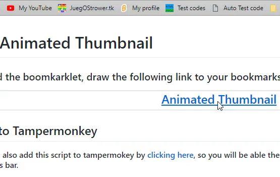

To add the boomkarklet, draw the following link to your bookmarks bar:
If you don't see the that bar, press Ctrl [Cmd on Mac] + Shift+ B

You can also add this script to tampermokey by clicking here, so you will be able the set an animated thumbnail clicking a button in the stats bar.